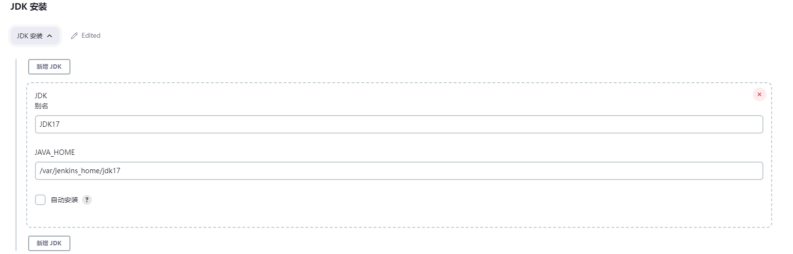
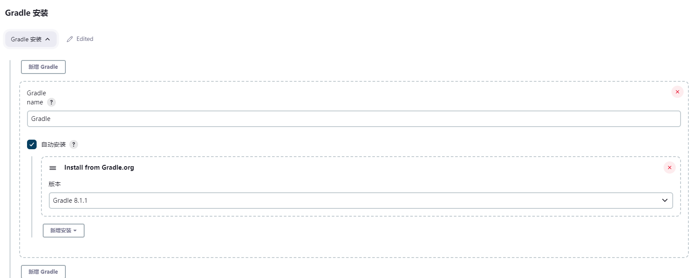
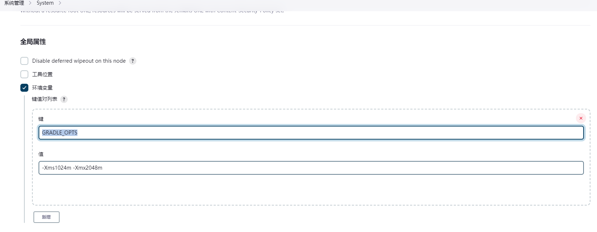
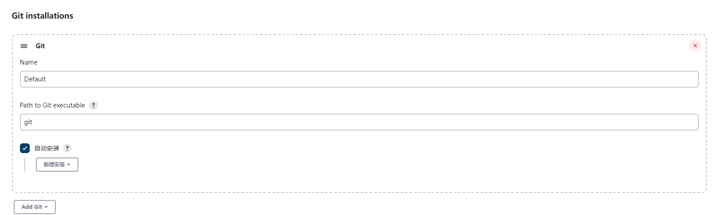
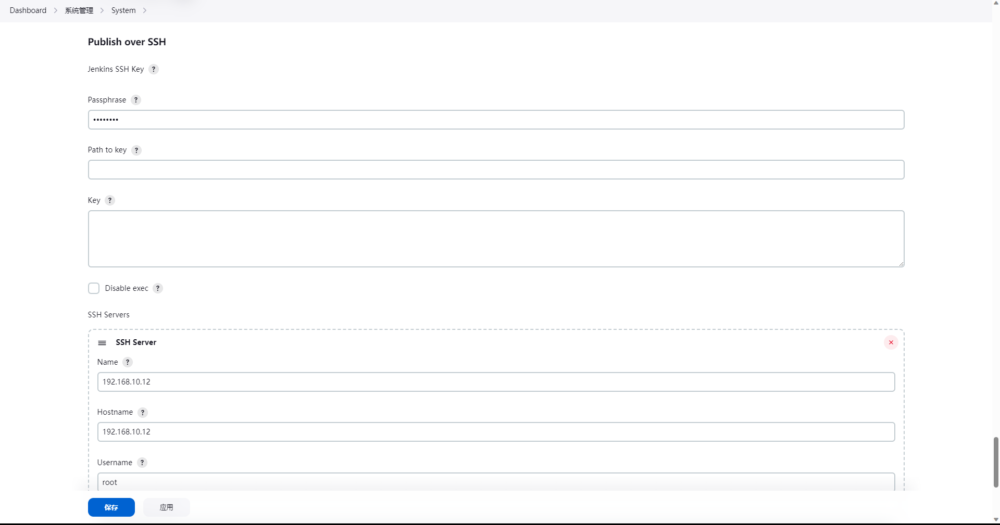
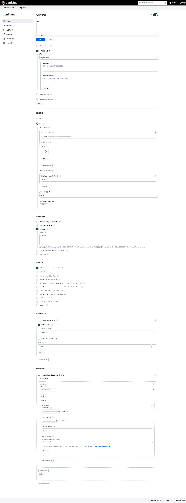

版本说明
- jenkins 2.405
- docker 23.0.3
环境搭建
1.拉取镜像
1 | docker pull jenkins\jenkins:2.405 |
2.创建容器
1 | docker run --name jenkins -d --privileged=true -v /etc/localtime:/etc/localtime:ro -p 16080:8080 -p 50000:50000 -v /opt/docker_data/jenkins:/var/jenkins_home jenkins/jenkins:2.405 |
3.配置
容器启动后，容器控制台会打印Jenkins的初始密码。可以借助portainer或者docker log从控制台获得该密码。获得密码后访问：http://yourip:16080 进行初始化设置即可。
4.环境配置
这里需要配置的环境有 主要都在 Dashboard --> 系统管理 --> 全局工具配置中配置
- JDK
- Gradle 或 Maven
- Git
- 插件安装
- 凭证配置
JDK：如果版本需求不是很高的话可以选择内置的。否则可以自行下载后放置在容器挂载目录配置也可以。

Gradle：选择版本直接安装，这里需要特别说明的是: gradle默认只会使用512内存，容易打包时爆出内存不足的异常。所以要在Dashboard --> 系统管理 --> 系统配置中添加GRADLE_OPTS的环境变量


Git: 选择版本直接安装

插件安装：主要是 Publish Over SSH ，用来发布到宿主机。安装后同样需要到Dashboard --> 系统管理 --> 系统配置进行配置

凭证配置: 我使用的是SSH协议拉取项目，可以在Dashboard --> 系统管理 --> 凭据中配置一个SSH 私钥，这里需要注意的是jenkins需要的私钥格式为pem类型，如果是用puttyGen生成的私钥，生成完选择Conversions->Export OpenSSHkey即可。如果是命令行生成的可以使用如下命令
1 | ssh-keygen -m PEM -t rsa -f <yourfile> |
任务创建
环境配置好之后就可以创建打包任务了，这里可以创建一个自由风格的任务。这里比较简单按需配置即可。
需要注意的地方就是构建后步骤里Send build artifacts over SSH这边。参数说明如下
- SSH Server Name： 前面配置的SSH Server
- Transfer Set Source files: 项目构建后的目录（以本项目为根路径）
- Remove prefix: 需要去除的前缀
- Remote directoty 发布的目录（前缀为系统设置里配置Publish over SSH的Remote Directory）
- Exec command 发布完执行的命令 ， 这里需要提前在宿主机或者远程服务器准备好两个文件
Dockerfile和docker.sh，具体内容如下
Dockerfile1
2
3
4
5
6
7
8
9
10
11
12
13# 基于哪个镜像
FROM mcr.microsoft.com/java/jre:17-zulu-alpine
#FROM mcr.microsoft.com/java/jre-headless:17u1-zulu-alpine
#FROM azul/zulu-openjdk-alpine:17
# 映射/tmp到主机
VOLUME /tmp
#将打包好的spring程序拷贝到容器中的指定位置
COPY *.jar /opt/app.jar
#容器对外暴露9019
EXPOSE 9019
# 容器启动后执行的命令
ENTRYPOINT ["java","-Djava.security.egd=file:/dev/./urandom","-jar","/opt/app.jar"]
docker.sh
1 | !/bin/bash |
总体配置如下图
